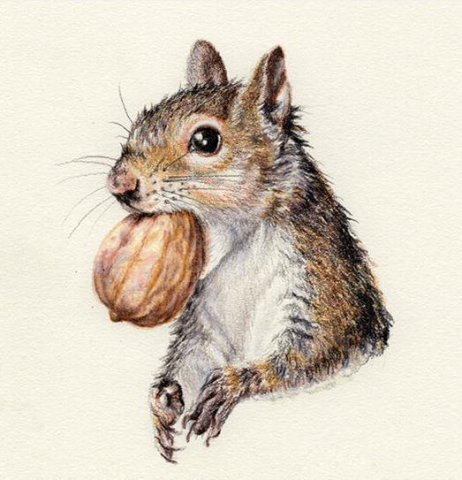

Pascal Delage devenait insensible aux effluves porcins qu’il respirait depuis 30 ans dans l’abattoir qui l’employait. D’une main épaisse, il décrocha la carcasse rosée d’un cochon maintenue en suspension par la pointe acérée d’un crochet qui la transperçait. Le Grand Pascal, comme l’appelaient ses camarades de dépeçage, n’avait pas son pareil pour charcuter les porcs, sans jamais sourciller.
D’un geste lourd et précis, il fendit la carcasse de tout son long pour mieux désosser le cadavre comestible de l’animal. Les os roulaient sous sa lame dans une symphonie de craquements sourds, étouffés par d’épaisses couches de lard amorphes. Transformer la mort en source de vie, c’est tout un art ! Il finirait de s’occuper de celui-ci et débaucherait à 16 h 30, après une journée de découpes méthodiques et routinières. Contremaître intransigeant, il faisait partie des meubles de la Maison Geoffrey. Il était réputé pour son caractère grognon et sa fougue infatigable. Lors d’une sévère dispute il y a quelques années, son patron lui reprocha la façon « abjecte » dont il considérait ses nouveaux apprentis, prétendant que son cœur ne battait pas plus que celui des pauvres bêtes qui passaient sous son hachoir. Il avait certes des méthodes peu orthodoxes, mais il considérait qu’il rendait service à ces jeunes qui devaient comprendre l’âpreté de leur futur métier. Accablé par un sentiment d’injustice qu’il portait en horreur, le Grand Pascal succomba à sa nature colérique. Il se mit à cogner à mains nues la carcasse fraîche d’un gros cochon, lui brisa les côtes et finit par en sortir le cœur qu’il jeta sur le bureau du patron dans une explosion de paperasse tachetée d’un pourpre humide. Il lui lança, finalement : « Alors comme ça, il bat plus que l’mien le cœur du goret, hein ? ». Par cette nouvelle rodomontade, il gagna le respect de ses pairs dans l’hilarité générale, mais la défiance de sa hiérarchie qui, bien que consciente de son efficacité au travail, tentait depuis de s’en séparer.
Un claquement sec précéda le doux grelot de la sonnerie qui annonçait la sortie d’usine. Pascal était dévoué à son travail, mais l’heure, c’était l’heure. À 16 h 34, il était déjà habillé en civil, prêt à grimper à bord de son utilitaire pour sillonner la départementale 4 qui le ramènerait plus vite à Écuras. Il habitait une jolie bâtisse de pierres sobres aux volets bleus où l’attendait la Mère Sylvie, son « p’tit bout d’femme ». Pour Pascal, chaque minute de liberté comptait. En quittant Angoulême, il prit des virages serrés, toisa les feux qui passaient à l’orange, manqua de délicatesse avec les priorités à droite et les limitations de vitesse. Tout ce qui comptait pour lui, c’était de rentrer le plus vite possible. A la sortie de Montbron, alors qu’il n’était plus qu’à cinq minutes de sa maison, il emprunta brusquement la D699 et pénétra, au niveau de la Forge de Pierre pendu, dans la discrète vallée verdoyante de la Renaudie. Il aimait se baigner dans l’étendue intime de cette parenthèse sauvage liée à la civilisation par un mince chapelet de fermes et de gîtes. Oh, il restait bien quelques vestiges humains de son intense activité passée, mais la nature y avait désormais des droits que les hommes ne revendiquaient plus en ces lieux. Il s’enfonça dans le confort charnu d’un bosquet qui abritait un langoureux ruisseau. Il gagnerait, à pied, la ripisylve en effervescence au cœur d’un printemps généreux. Le Grand Pascal fit glisser délicatement la porte de son petit utilitaire blanc pour en dégager une caisse dont il sortit quelques planches de bois, des clous ainsi que divers outils. Après quelques pas sous le crissement moite de brindilles broyées par ses cent vingt kilos, il atteignit le bord de l’eau et s’affaissa contre le tronc fébrile d’un jeune frêne qui épousa la courbe de son dos sans broncher. Pascal était rentré chez lui.
Il aimait se baigner dans l’étendue intime de cette parenthèse sauvage liée à la civilisation par un mince chapelet de fermes et de gîtes.
Le crépitement pressé d’un petit écureuil l’invita à abandonner une sieste réconfortante, loin du vacarme carnassier de son abattoir. Pascal le regarda comme pour lui dire merci, tendit un morceau de pain frais que l’écureuil accepta, puis se leva mollement. Il devait réparer deux ou trois nichoirs qui n’avaient pas supporté les assauts de l’hiver.
Il connaissait la vallée comme personne, mais personne ne savait qu’il la connaissait. Le Grand Pascal cultivait sa virilité d’apparat comme le jardinier son potager, et gardait sécrète sa relation presque charnelle avec la nature.
Qu’auraient pensé ses camarades en l’écoutant répondre de sa voix caverneuse au babillage coloré d’un Étourneau sansonnet, en le voyant rougir d’admiration devant le vol majestueux d’un Paon-du-jour ou murmurer des douceurs puériles au Chabot qui ruse l’œil exercé des meilleurs pêcheurs en épousant les formes du lit glaiseux qui l’abrite ? Ils se seraient moqués de lui, assurément : « Le Grand Pascal brise des côtes de cochon à main nue la journée, mais fait l’amour aux arbres le soir ! Ha Ha Ha !». Prisonnier d’une fierté d’un autre temps, Pascal préférait chasser de son esprit les rires gras de ses compagnons avec qui il n’imaginait pas, sûrement à tort, pouvoir partager cette intimité. Après s’être occupé des nichoirs, il entreprit une ballade le long du cours d’eau, s’amusant à y tremper les pieds, çà et là. Il marcha près d’une heure et choisit une prairie accueillante pour nourrir sa passion des oiseaux en goûtant aux pages érudites d’un magazine spécialisé. Il était presque 19 h 00 quand il se décida à regagner le domicile conjugal.
Pascal usait de tous les subterfuges pour que ses camarades ne sachent rien ce qu’il considérait étrangement comme des écarts de virilité. Par-dessus tout, sa femme ne devait rien savoir ! Tout le village l’aura appris, déformé, colporté avant même qu’il n’eut pu s’en expliquer, maugréait-il souvent. Sur la route du retour, il s’arrêta sur le parking du terrain de football de Chatain-Besson où il avait pris ses habitudes. Il sortit de la glacière une pleine bouteille de vin rouge dont il vida presque d’une traite le contenant en plastique, lâchant à mi-voix : « Avec ça, je vais sentir bon la vinasse de chez Dédé ! ». Il attendait que le liquide bon marché lui rende le service qu’il attendait de lui et, quand les premiers troubles affectèrent ses sens, reprit la route d’une mine réjouie pour parcourir les derniers mètres qui le séparaient de son domicile. Il arriva en retard pour le dîner, accueilli comme il se doit par une épouse inquiète de ses certitudes. Elle ne pouvait que constater qu’elle avait raison, une fois de plus : Tu t’es encore pochtronné avec tes copains Chez Dédé jusqu’à pas d’heure !
— Tu aurais pu avoir un accident de voiture dans ton état, ou pire, un retrait de permis ! Et si tu ne peux plus conduire, tu ne pourras plus travailler mon Pascal, mais ça, tu t’en fiches ! …
Alors que la Mère Sylvie s’enlisait dans une litanie d’accusations et de menaces folkloriques, le Grand Pascal, satisfait que sa ruse fonctionnât cette fois encore, la laissa prisonnière de sa vérité. Elle était la gardienne, à son insu, de ce tout petit mensonge récurent qui lui offrait tant de liberté.
G.R.
« Méthode » recommande la nouvelle de Grégory ROOSE : « LE CHÂTELAIN »
Résumé :
Il régnait dans cette demeure une ambiance romanesque d'où émanaient les effluves d'amour courtois et d'esprit chevaleresque. Son harmonie se dégradait, néanmoins, et les efforts de son dernier propriétaire pour maintenir son éclat semblaient vains et toujours insuffisants.
Cédric Verdier en tirait un sentiment de diminution progressive qui l'avait contraint, après de longues batailles perdues, à accepter sa défaite. Le dernier héritier n'était pas capable d'assurer la permanence de son patrimoine, sa survie à travers les âges.
La seule solution était de vendre le château à plus capable que lui, quitte à en flétrir d'indignité.
Partager cette page